SemTag and Seeker: Bootstrapping the Semantic Web via Automated Semantic Annotation
Abstract
This paper describes Seeker, a platform for large-scale text analytics, and SemTag, an application written on the platform to perform automated semantic tagging of large corpora. We apply SemTag to a collection of approximately 264 million web pages, and generate approximately 434 million automatically disambiguated semantic tags, published to the web as a label bureau providing metadata regarding the 434 million annotations. To our knowledge, this is the largest scale semantic tagging effort to date.
We describe the Seeker platform, discuss the architecture of the SemTag application, describe a new disambiguation algorithm specialized to support ontological disambiguation of large-scale data, evaluate the algorithm, and present our final results with information about acquiring and making use of the semantic tags. We argue that automated large scale semantic tagging of ambiguous content can bootstrap and accelerate the creation of the semantic web.
Categories and Subject Descriptors
D.2.11 [Software Engineering]: Software Architectures; H.2.4 [Database Management]: Systems -- Textual databases; H.3.3 [Information Storage and Retrieval]: Information Search and Retrieval; H.3.5 [Information Storage and Retrieval]: Online Information Services -- Web-based services; I.2.7 [Artificial Intelligence]: Natural Language Processing;
General Terms
Algorithms, Design, Experimentation
Keywords
Large text datasets, information retrieval, data mining, text analytics, automated semantic tagging
1 Introduction
The WWW has had a tremendous impact on society and business in just
a few years by making information instantly and ubiquitously
available. During this transition from physical to electronic means
for information transport, the content and encoding of information
has remained natural language. Today, this is perhaps the most
significant obstacle to streamlining business processes via the
web. In order that processes may execute without human
intervention, documents must become more machine
understandable.
The Semantic Web [5] is a vision of a future web of machine-understandable documents and data.1 On a machine understandable web, it will be possible for programs to easily determine what documents are about. For instance, the people, places, events, and other entities that a document mentions will be canonically annotated within it. As a consequence, it is hoped that a new breed of smarter applications will become available.
Where will the data come from? For the semantic web vision to come to fruition, two classes of meta-data must become extensive and pervasive. The first is ontological support in the form of web-available services which will maintain metadata about entities and provide them when needed. The second is large-scale availability of annotations within documents encoding canonical references to mentioned entities.
Ontological support for the semantic web is an active area of both research and business development, but not the focus of this paper. Instead, we use the TAP ontology [30] in our experiments.
In partial support of the second class of data, document annotations, it is expected that enterprises will make business data available in Semantic Web formats (RDF, XML, or OWL). It is also expected that productivity tools will make it possible for individuals to author semantically annotated documents.
Nonetheless, for all this to happen, we need applications that can effectively leverage semantically tagged data. In turn, these applications cannot be useful unless there is enough semantically tagged data on the web in the first place. Unfortunately, today's reality is that few documents contain such annotations a priori, and we are in a state of circular dependency. Organizations that might create powerful tools based on semantic annotations are leery of sinking significant developmental effort while the number of available tags remains small; and content creators are similarly unwilling to create annotations while no tools exist to make use of them. The size of the web makes this bootstrapping problem is both formidable and acute.
1.1 Our contributions
SemTag is an application that performs automated semantic tagging of large corpora. We apply SemTag to a collection of approximately 264 million web pages, and generate approximately 434 million automatically disambiguated semantic tags, published to the web as a label bureau [37] providing metadata regarding the 434 million annotations. To our knowledge, this is the largest scale semantic tagging effort to date, and demonstrates the viability of bootstrapping a web scale semantic network. The key challenge is resolving ambiguities in a natural language corpus. To this end, we introduce a new disambiguation algorithm called TBD, for Taxonomy-Based Disambiguation.Maintaining and updating a corpus the size of the Web requires infrastructure of a scale which most tagging applications cannot be expected to support. We also need a platform which different tagging applications can share. Seeker is a platform designed for this purpose. It provides highly scalable core functionality to support the needs of SemTag and other automated semantic annotation algorithms.
1.2 Paper structure
The remainder of the paper will consist of a review of the current state of the art (Section 2), an outline of the SemTag application approach (Section 3), the results of running the SemTag application on the web corpus (Section 4), an outline of what the underlying Seeker system requires (Section 5), a brief discussion of the design and implementation of that system (Section 6) followed by general conclusions (Section 7).
2 Related Literature
In the last couple of years, as part of the Semantic Web activity, a number of different systems have been built. These systems help perform one of two tasks: (1) create ontologies, and (2) annotate web pages with ontology derived semantic tags. By and large, both classes of systems have been focused on manual and semi-automatic tooling to improve the productivity of a human ontologist or annotator rather than on fully automated methods. Such systems have the advantage that humans can provide extremely fine-grained semantic tags. However, as reported in [11], even with the machine assistance, this is an arduous, time consuming and error-prone task.
A number of annotation tools for producing semantic markups exist. Protege-2000 [28] is a tool which supports the creation of ontologies for the semantic web. OntoAnnotate [34], a framework for the semantic web, includes tools for both manual and semi-automatic annotation of pages. Annotea [17] provides RDF-based markup but it does not support information extraction nor is it linked to an ontology server. SHOE [14] was one the earliest systems for adding semantic annotations to web pages. SHOE Knowledge Annotator allows users to mark up pages in SHOE guided by ontologies available locally or via a URL. These marked up pages can be reasoned about by SHOE-aware tools such as SHOE Search. Such tools are described in [36,19]. AeroDAML [23] is an interesting tools which takes an ontology and automatically produces a semantically marked up page which can then be checked by a human.
More recently, there have been efforts to automate some of these tasks using machine learning as a palliative measure. The principal tool is ``wrapping'' (see, for instance, [18,20,10]). These systems try to extract detailed structural data out of the pages and require significant training before they can be productive. Furthermore, such systems don't work against common shared ontologies, which is the focus of the semantic web.
SemTag is different from both these classes of systems in that it tags very large numbers of pages, with terms from a standard ontology, in an automated fashion. Furthermore, since SemTag operates as a centralized application with access to the entire database and associated metadata, it has many advantages over a local, per-page tagger. For example, it can make use of corpus-wide statistics to increase the quality of semantic tags. It can easily be re-run as new annotation algorithms and new semantic repositories become available. And it can perform operations that are only possible in the presence of many tags, such as automated alias discovery. More recent work, e.g. [22], which combines natural language understanding with learning to automatically generate annotations for specific domains is similar in spirit to SemTag. The current focus of SemTag is detecting the occurrence of particular entities in web pages. One of the critical steps in this process is that of resolving ambiguities. This is an area with a rich body of work ([40,32,21,26,29]) from the language understanding community.
In this paper, we present results of SemTag using the TAP knowledge base [31]. TAP is a shallow knowledge base that contains a broad range of lexical and taxonomic information about popular objects like: Music, movies, authors, sports, autos, health, etc. We used the TAP knowledge base in its standard ontology. Building a web scale ontology will require much larger knowledge bases. Future work involves using techniques such as those described in [31] to bootstrap from TAP to build much larger and richer ontologies.
With SemTag's current shallow level of understanding, RDFS [7] provides an adequate language for representing the annotations it generates. We expect that in the future, as SemTag's level of understanding improves, we will have to use more advanced languages [24] and move towards OWL [38].
SemTag is built on the Seeker platform for large scale text analytics. The explosive growth of the web, and the difficulty of performing complex data analysis tasks on unstructured data, has led to several different lines of research and development. Of these, the most prominent are the web search engines, (see for instance [12,3]) which have been primarily designed to address the problem of ``information overload.'' A number of interesting techniques have been suggested in this area; however, since this is not the direct focus of this paper, we omit these here. The interested reader is referred to the survey by Broder and Henzinger [8].
Several authors [1,15,4,33,25] describe relational approaches to web analysis. In this model, data on the web is seen as a collection of relations (for instance, the ``points to'' relation) each of which are realized by a function and accessed through a relational engine. This allows a user to describe his or her query in declarative form (SQL, typically) and leverages the machinery of SQL to execute the query. In all of these approaches, the data is fetched dynamically from the network on a lazy basis, and therefore, runtime performance is heavily penalized.
The Stanford WebBase project [16], while targeting a system that allows easy sequential and random access to a copy of the web, does not provide the same prototyping and development environment Seeker does. Specifically, it lacks the functionality that allows developers to annotate web pages, and easily reuse the results of other analysis components.
Compaq SRC web-in-a-box (WIB) project [39] is another system designed to allow researchers to develop text analysis tools that have access to a copy of the web. While WIB allows analysis components to annotate web pages, it does not provide storage for any derived data (such as people or organizations) other than web pages. Furthermore, its architecture does not allow users to compose complex data mining modules from simpler data mining modules, or re-use data.
The Internet Archive [35], has a different objective. The data is crawled and hosted, as is the case in web search engines. In addition, a streaming data interface is provided which allows applications to access the data for analysis. However, a sophisticated querying system is not provided, nor is a method to perform large scale data analysis.
3 SemTag: A Semantic Tagger
Consider a world in which all documents on the web contained
semantic annotations based on TAP. So the sentence: ``The Chicago
Bulls announced yesterday that Michael Jordan will...'' would
appear as:
The <resource ref="http://tap.stanford.edu/ BasketballTeam_Bulls">Chicago Bulls</resource> announced yesterday that <resource ref= "http://tap.stanford.edu/AthleteJordan,_Michael"> Michael Jordan</resource> will...''Thus, the annotation:
<resource ref="http://tap.stanford.edu/ AthleteJordan,_Michael">Michael Jordan</resource>says that the string ``Michael Jordan'' refers to the resource whose URI is ``http://tap.stanford.edu/AthleteJordan,_Michael.'' It is expected that querying this URI will result in encoded information which provides greater detail about this resource.
The bulk of documents on the web today do not contain annotations of this form. Consequently, application developers cannot rely on such annotations. On the other side, website creators are unlikely to add annotations in the absence of applications that use these annotations. A natural approach to break this cycle and provide an early set of widespread semantic tags is automated generation. This is the goal of SemTag. SemTag seeks to provide an automated processes for adding these to the existing HTML corpus on the Web. In this paper, we look at what needs to be done to address this problem at the scale of the web.
We adapt the concept of a label bureau from PICS so that an application of the Semantic Web can obtain semantic annotations for a page from a third party even when the author of the page has annotated the page. Semantic annotations can be retrieved separately from the documents to which they refer. To request annotations in this way, an application contacts a Semantic Label Bureau. A semantic label bureau is an HTTP server that understands a particular query syntax. It can provide annotations for documents that reside on other servers.
Because SemTag does not have write access to the original document, the resulting annotations are written into a web-available database. The contents of this data base are made available via a semantic label bureau from which it is possible to extract semantic tags using a variety of mechanisms. For instance, one application may request the semantic tags for a given document, while another may request all semantic tags regarding a particular object (say, the basketball player Michael Jordan).
3.1 SemTag flow
The overall SemTag architecture is shown in Figure 1.
SemTag works in three phases:
- Spotting pass
- Documents are retrieved from the Seeker store, tokenized, and then processed to find all instances of the approximately 72K labels that appear in the TAP taxonomy. Each resulting label is saved with ten words to either side as a ``window'' of context around the particular candidate object. This first stage takes place at approximately 10,000 documents per second on the Seeker infrastructure, naively distributed over 64 machines.
- Learning pass
- A representative sample of the data is then scanned to determine the corpus-wide distribution of terms at each internal node of the taxonomy, as described in Section 3.3. This processing takes place at approximately 8,000 windows per second on a single machine.
- Tagging pass
- Finally, the windows must be scanned once more to disambiguate each reference. When a string is finally determined to refer to an actual TAP object, a record is entered into a database of final results containing the URL, the reference, and any other associated metadata. This pass can be performed sequentially at approximately 1,200-3,000 windows/second on a single machine. For details on the algorithm used in doing this see Section 3.3.
3.2 SemTag Ambiguity resolution
In this section, we describe the Taxonomy Based Disambiguation
(TBD) algorithm. TBD performs disambiguation of references to
entities within a large-scale ontology.
Ambiguity within SemTag: Automated tagging algorithms, unlike human tagged data, can have significant levels of mis-classification. Thus, sources of ambiguity within the ontology is a significant concern. There are two fundamental categories of ambiguities:
- Some labels appear at multiple locations in the TAP ontology. For instance, the string ``Michael Jordan'' may refer to a statistician, a basketball player, or many others. This occurs infrequently in the current taxonomy, but we expect it to occur with increasing frequency as the taxonomy grows.
- Some entities have labels that occur in contexts that have no representative in the taxonomy. For instance, the term Natalia sometimes refers to the musician, but ordinarily denotes simply a person's first name, which has no entry in the taxonomy. This occurs frequently in our current data set, and will probably continue to occur frequently even as the taxonomy grows.
Evolution of ontologies: Ontologies such as TAP will continue to evolve. Our expectation is that tailored algorithms with human-tuned parameters will be applied to a small number of critical sections, with automated approaches still dealing with the bulk of the ontology. In keeping with this philosophy TBD makes use of two classes of training information:
- Automatic metadata
- A large amount of automatically-generated metadata allows the algorithm to estimate whether windows around candidate references are likely to have been generated within a particular subtree of the taxonomy.
- Manual metadata
- A small amount of manually-generated metadata (approximately 700 yes/no judgments regarding whether a label in a given context refers to some objects) gives the algorithm information regarding nodes of the taxonomy that contain highly ambiguous or unambiguous labels. These judgments are used to determine which portions of the taxonomy can most fruitfully benefit from particular disambiguation schemes.
3.3 Overview of TBD
We begin with a few formal definitions. Terms are italicized when
first defined.
An ontology is defined by four elements. A set of classes, , a subClass relation , a set of instances , and a type relation . We use the notation 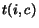 to denote the boolean function 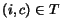 and 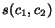 likewise. We assume that instances are closed over super-classing. Namely, for any 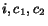, 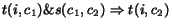.
An taxonomy is defined by three
elements: a set of nodes, 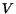; a
root 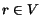; and finally, a parent
function,
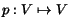. We require that (1) the
root is its own parent, 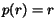, (2) for all other
nodes, this is not so, i.e. if
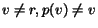, and (3) the root
is in the ancestry of every node,
i.e. for every 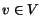,
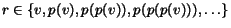.
Henceforth, we will use 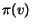 to denote the
ancestry chain of  . The internal nodes
of the taxonomy are given by
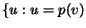 for some
. The internal nodes
of the taxonomy are given by
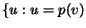 for some  . A taxonomy can be derived given an
ontology, which is a more general concept.
. A taxonomy can be derived given an
ontology, which is a more general concept.
Each node is associated with a set of labels, 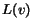. For instance, taxonomy nodes about cats, football, computers and cars all contain the label ``jaguar.'' A spot 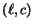 is a label in a context 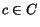, where is the space of all possible contexts. The context consists of 10 preceding and 10 succeeding words of text surrounding the label, culled from the document in which the label occurred. We use the spot to tag the label with its semantic tag, which is always an node of .
With each internal node 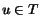 we associate a similarity function 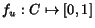 mapping from a context to a similarity. Good similarity functions have the property that the higher the similarity, the more likely that the spot contains a reference to an entity that belongs in the subtree rooted at . The similarity functions encapsulate the automatically-generated metadata regarding nodes of the taxonomy.
We can use the similarity function to define an algorithm Sim to
guess whether a particular context  is
appropriate for a particular node, as follows. We will then use Sim
to define TBD. The definition of Sim is given in Figure 2.
is
appropriate for a particular node, as follows. We will then use Sim
to define TBD. The definition of Sim is given in Figure 2.
For our problem instance, we must focus on disambiguating references in the taxonomy versus references outside the taxonomy. If the focus is instead on disambiguating references that may belong to multiple nodes of the taxonomy, then the test 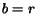 should be replaced with 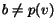.
Finally, with a small number of popular internal nodes we associate a measurement 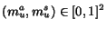. 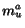 gives the probability as measured by human judgments that spots for the subtree rooted at are on topic. 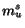 gives the probability that Sim correctly judges whether spots for the subtree rooted at are on topic. Thus, the set of measurements encapsulates the manually-generated metadata in the system, and can be seen as a training set for the algorithm.
Algorithm TBD is defined in Figure 3. The algorithm returns 1 or 0 to
indicate whether a particular context  is on topic
for a node 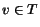.
is on topic
for a node 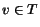.
Thus, the small numbers of measurements allow TBD to determine whether it is operating in a region of the taxonomy that is highly unambiguous, or a region that is highly ambiguous. If the former, it will choose to adopt references with certainly; if the latter, it will apply a probabilistic algorithm.
In Section 4 we evaluate various different approaches to the similarity function 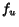.
4 Results
We implemented the SemTag algorithm described above, and applied it to a set of 264 million pages producing 270G of dump data corresponding to 550 million labels in context. Of these labels, approximately 79% are judged to be on-topic, resulting in a final set of about 434 million spots, with accuracy around 82%. Details are given below.
4.1 Methodology
As described above, we first dumped context surrounding each spot. We then processed those contexts as follows:
Lexicon generation: We built a collection of 1.4 million unique words occurring in a random subset of windows containing approximately 90 million total words. Following standard practice, we created a final lexicon of 200,000 words from the 1.4 million unique words by taking the most frequent 200,100, and removed the most frequent 100. All further computations were performed in the 200,000-dimensional vector space defined by this set of terms.
Similarity functions: We estimated the distribution of terms corresponding to each of the 192 most common internal nodes of the taxonomy in order to derive the similarity function described in Section 3.3. We experimented with several standard similarity measures; the results are given in Section 4.2.
Measurement values: Based on 750 relevance judgments from human judges, we determined the measurement values associated with the 24 largest taxonomy nodes, as described in Section 3.3.
Full TBD processing: We applied the TBD algorithm to the entire dataset of 550 million spots using the family of similarity functions deemed to be most effective in Section 4.2, and using the human- and machine-generated metadata described above.
Evaluation: Finally, we collected an additional 378 human judgments against a previously unevaluated set of contexts in order to evaluate the effectiveness of TBD.
We now describe briefly our process for collecting human judgments, our measure of accuracy, and some baseline experiments regarding the difficulty that human judges have in coming to a single unambiguous conclusion about a particular spot.
4.1.1 Evaluation and human judgments
As is well known from research in Knowledge Acquisition [13] and more recently from studies of manual semantic tagging of documents, there are many cases where different people choose different terms from an ontology with which to tag a phrase or a document. Therefore, we need to be careful when evaluating the results of SemTag.
We created a web-based tool that displays to an evaluator a spot consisting of a label in a context. The tool asks the evaluator to determine whether the spot is on topic for a particular node of TAP. This information is used to generate the measurements of Section 3.3.
Because there are several locations in TAP that may be appropriate for a particular entry (we evaluate this phenomenon below), the tool also checks to see if TBD suggested that the spot belongs elsewhere--if so, the tool also asks whether the algorithm's output is a valid answer.
We gathered two sets of evaluations. For the first set of evaluations, a set of 11 volunteers were asked to examine 1100 selections made by SemTag. The first 2/3 of these evaluations were used as human-generated metadata for TBD. The remaining 1/3 of the evaluations were used to score the performance of the algorithm.
Finally, a set of three volunteers were each asked to evaluate the same set of 200 labels in context, using the same tool described above. Of these 200, all three evaluators agreed on 137; i.e., only 68.5% were unambiguous to the humans. Furthermore, the tool was modified in this experiment to allow the users to indicate that a particular piece of context (typically ten words to either side of the label) was insufficient to understand the denotation of the label. The evaluators each selected this option in only 2.5% of the instances. Therefore, we conclude that while a 10-word window to either side of a label is typically sufficient to understand the sense of the label, human judgment is highly ambiguous regarding the placement of the label into the taxonomy.
The remainder of this section proceeds as follows. Section 4.2 describes our evaluation of different similarity functions. Sections 4.3 and 4.4 then give results of a sensitivity analysis to the availability of machine- and human-generated metadata to develop the similarity functions and measurement values respectively of Section 3.3.
4.2 Similarity between a Spot and a Collection
Consider some fixed node of the taxonomy, and a new spot that may belong in the subtree rooted at that
node. As presented in Section 3.3, TBD must
determine whether the context  corresponding to the new spot looks similar to the contexts that
typically occur around spots from that node. We evaluate four
standard candidates for similarity functions.
corresponding to the new spot looks similar to the contexts that
typically occur around spots from that node. We evaluate four
standard candidates for similarity functions.
First, we must cover the preliminaries. We generate a 200K-dimensional vector (over the terms of the lexicon) corresponding to each internal node , or more precisely, to the contexts that occur around spots for the . In scheme ``Prob'', each entry of the vector is simply the probability of the term occurring in the window. In scheme ``TF-IDF'', each entry of the vector is the frequency of the term occurring at that node, divided by the corpus frequency of the term. In all cases, the vectors are normalized to length 1.
Next, we consider two variants of algorithms to compute the similarity of a spot given a vector. Algorithm ``IR'' computes the standard ``cosine measure'' vector product of the sparse vector corresponding to the current spot and the (probably dense) vector corresponding to the node. Algorithm ``Bayes'' computes the probability that the terms in the context would have been generated by a source generating terms independently according to the distribution given by the vector corresponding to .
|
The results are shown in Table 1. As the table shows, the most effective scheme is the cosine measure with tf-idf weightings. Furthermore, the tf-idf weighting scheme dominates the unweighted scheme, and so we adopt it henceforth for our other comparisons, and simply compare the IR and Bayes algorithms.
Overall, the accuracy of classification under the favored scheme is roughly 82%. As we show later, even comparing human judgments to other human judgments shows a systematic error rate of roughly this amount, leading us to believe that significant improvements will be quite difficult to achieve.
4.3 Sensitivity to availability of human-derived metadata
Next, we consider the sensitivity of TBD to the amount of human-derived metadata present in the system. When TBD makes use of all human-derived metadata, there are 24 internal nodes of with measurements. Figure 4 shows for each such node what fraction of the total labels are covered by that node. The first node with measurement data is the root , whose subtree covers all measurements; thus, the leftmost point of the graph has -value 100. The next node with measurement data corresponds to cities in the United States, and covers around 13% of the total spots. The actual values, and node labels, are given in Table 2.
Figure 5 shows the performance of TBD when only of the 24 total measurements are available to the system. As the figure shows, TBD is effective even with extremely minimal metadata.
|
4.4 Sensitivity to availability of machine-generated metadata
Finally, we consider the sensitivity of the algorithm to the amount of automatically-generated metadata maintained at internal nodes of the taxonomy. As described above, the representation of the similarity function is a vector of 200K dimensions. We now consider keeping only the largest few dimensions of that vector for each of the internal nodes of the taxonomy. We proceed as follows. We fix some fraction , and for each internal node with vector 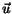, we keep only the largest 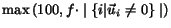 entries of . Table 3 shows, for various different values of the fraction , the total number of non-zero entries over all internal nodes (i.e., the total number of values that must be maintained in order to execute TBD), and the performance of the IR and Bayes algorithms using this smaller set of machine-generated metadata. The performance of the IR algorithm is extremely stable down to 100 non-zero entries per node, and the performance of the Bayes algorithm begins to degrade slightly sooner.
5 System Requirements
con-sum-ers The purpose of this paper is to describe an approach to
large-scale automated centralized semantic tagging delivered to
consumers through a label bureau. SemTag is an application that
demonstrates the feasibility of this approach. However, SemTag
relies upon Seeker, which we have developed as an ongoing platform
to support increasingly sophisticated text analytics applications,
particularly including future generations of semantic taggers. The
goal of Seeker is to provide Scalable, Extensible Extraction of
Knowledge from Erratic Resources. An erratic resource is one
that may have limited availability, a rapid rate of change, contain
conflicting or questionable content, or may be impossible to ingest
in totality (e.g., the World Wide Web). We have identified the
following design goals:
- Composibility
- There are multiple ways a page might be annotated. These annotations should be available to other annotators, to allow for more complex observations to be created incrementally. This requirement of shared annotation is not unlike the blackboard system approach [27].
- Modularity
- Various types of annotations require differing methodologies. The architecture needs to support the ``plugging in'' different approaches, as well as the switching to newer, better implementations of existing approaches as they evolve.
- Extensibility
- As we have found with SemTag, approaches to annotation evolve rapidly when confronted with real data. It is thus important that the Seeker architecture allow essentially arbitrary new approaches to annotation to be constructed and deployed.
- Scalability
- Scalability is important in two respects; first, the ability to develop a particular annotation approach on a representative subset of the corpora is an important design tool. Once an approach has been proved out on a test sub-corpora, it is desirable that the code scaled up to a multi-billion document corpora with minimal changes (e.g., none).
- Robustness
- On very large, distributed systems, failure of individual components is not a possibility, it is a certainty. The system needs to deal intelligently with failure of portions of the system, so that the faults in one component do not bring the whole system down.
6 The Seeker Design
To meet the design requirements expressed in Section 5, we adopt the architecture
shown in Figure 6.
Because the system must be modular and extensible, we adopt a web
services style architecture in which all agents communicate with
each other through a set of language-independent network-level APIs
defined on an XML substrate. To support scalability and robustness,
we classify a small set of critical services within this web
services framework as infrastructure components. These are
large, scalable, well-tested, distributed, high-performance
components that provide baseline functionality such as crawling,
indexing, storage of data and annotations, and query processing. A
larger set of loosely coupled analysis agents communicate through a
centralized data store (itself an infrastructure service). Such an
agent may execute at a different time and place, and in a different
language, than another agent it depends on. The runtime environment
performs monitoring and control of all services in the system. For
analysis agents, the runtime monitors them, manages their work
flow, scheduling, and (where possible) parallelism, and causes them
to see the set of data and annotations necessary for their success.
The current Seeker environment consists of 128 dual processor 1GHz
machines, each attached via switched gigabit network to 1/2
terabyte of network attached storage. Half of this cluster was used
for the SemTag tests. Since each of these nodes runs at
approximately 200 documents per second, the total time taken to
reprocess the web is 32 hours. IO for this speed completely
occupies one of the two 1GHz processors, requiring that the
spotter/classifier run at around 200 docs per second (3MB/sec) on a
single 1GHz processor. This limits the complexity of the
spotter/classifier that can run. In Section 6.1 we describe the XML substrate
of Figure 6.
Section 6.2 then describes
the current set of infrastructure components within Seeker.
Finally, Section 6.3
describes the analysis agents, which include the various components
of SemTag.
6.1 The XML substrate
Functionality in Seeker is delivered through a network services model, in which components publish their availability through a centralized registry, and export a network-level API. Thus, Seeker is a service oriented architecture (SOA): a local-area, loosely-coupled, pull-based, distributed computation system. We require high speed ( 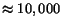 RPCs per second), high availability (automatic fail-over to backup services), and efficient multiple programming language support (due to integration and performance issues). As a result we choose to base our network services on Vinci [2] a SOAP [6]-derived package designed for higher performance intra-net applications.
Vinci uses a lightly encoded XML (employing the xtalk protocol) over raw TCP sockets to provide the required RPC rate. It includes translation gateways allowing SOAP components to be integrated with minimal difficulty.
6.2 Infrastructure components
Infrastructure services must address issues of reliability and scalability; therefore, the implementation of these core services includes a systems engineering problem. The main infrastructure components of Seeker include a centralized store, an extensible full-text indexer, a scalable web crawler, and a query processing component called the joiner. We will cover here only the components that are relevant to semantic tagging applications.
6.2.1 The Data Store
The data store is the central repository for all long-term shared
data storage within Seeker. The store not only serves as a storage
service for the rest of Seeker, but it also serves as the main
communication medium between miners. Annotators store their output
in the data store, and other miners depending on them retrieve that
information from the store, possibly much later and in a very
different environment, enabling loose coupling of miners. A Seeker
store contains entities, each of which is identified by a
globally unique 128 bit Universal Entity Identifier (or
UEID). The store provides both fast batched and random access to
entities. Entities are of a particular entity type. A web
page would be stored as an entity of type ``Page,'' for instance,
while the information about a particular person would be stored as
an entity of type ``Person''. The key/value pairs associated with
an entity describe all the information that has been extracted
about that entity.
6.2.2 The Indexer
The Seeker system contains a generic large-scale distributed indexer capable of indexing sequences of tokens. The index built contains not only a positional text index of the web, but also additional document annotations generated by miners. The indexer is fed documents as a stream of tokens, similar to the MultiText model [9], which allows us to achieve high performance during indexing due to the simple data model. For flexibility, each token that is indexed can have arbitrary attribute data associated with it. Analysis agents can generate additional tokens that overlay text tokens to indicate higher-level semantic information. These tokens are indexed along with the text, and may be used in queries to mix semantic information with full-text queries.
6.2.3 The Joiner
Indexers within the system are generic components. The indexer described above builds and serves a positional index that allows proximity queries, phrase search, and so forth. However, for some applications, an index that supports range queries of numeric values might be more appropriate--consider, for example, queries for locations within a particular region. Other queries may desire information about closure of spans of information, or be geospatial in nature or be part of a hand-selected collection or any of a number of restrictions.
The joiner is a service that takes a request, for example
SELECT url FROM web WHERE
SemTag = 'Athlete,Jorden,_Michael'
and PageLocation within 20 miles of SanJose
and returns the set of URLs of pages that meet the restriction criteria.
The joiner allows more complicated annotators to examine only those documents which meet some basic criteria, allowing them to take more time on those pages of interest.
6.3 Analysis agents
An analysis agent is an encapsulated piece of functionality that
executes in the Seeker environment, roughly equivalent to a
``module'' in a traditional programming language. As such, it is a
completely generic object that could perform simple processing of
individual pages, or could perform complex distributed operations
with built-in fault tolerance and parallelism. Clearly, it is not
possible to provide development tools that will make all annotators
easy to write. Instead, we identified a limited but common class of
analysis agents called annotators and we have worked to
provide significant support for these agents, while allowing the
more sophisticated user full generality to create more complex
agents. All the initial SemTag components are annotators. We then
define miners to be agents that do not fall into this
limited set.
6.3.1 Annotators
An annotator is defined as an analysis agent that can be written to process each entity of a certain type independently. We focus immediately on the most common category of annotators, in which the entity type is the page, and the annotator performs some local processing on each web page, and writes back results to the store in the form of an annotation. For example, analysis agents that scan each web page and recognize geographic locations, or proper names, or weights and measures, or indications that the page contains pornographic content, are all annotators. Similarly, analysis agents that perform complex tokenization, summarization, or language identification, or that automatically translate between languages, are also annotators.
Annotators manifest strong locality of reference in that they can be run independently on each individual web page without reference to other pages. Thus, they can be executed by the system on a machine with limited resources, and handed one page at a time. The system provides special support for annotators, making them almost trivial to program. The programmer need write only a simple process_one_page() function, and the system will make sure the function is applied to all pages in the dataset, and the results are published in the store for all others annotators to use.
In SemTag, the operation of dumping all windows containing references to TAP objects is coded as an annotator. Due to the simplicity of creating and running annotators, it was possible to post-process the TAP RDF file in order to extract the labels for each node of the ontology, create an annotator to extract the windows around each label, and run the annotator on the full set of data, within a 24 hours period.
A similar annotator can be used to write annotations back into the store once processing has completed on the large collections of windows. However, the intermediate processing, generation of automatic metadata, and incorporation of manual metadata from human judgments, does not fit the limited definition of an annotator, and must therefore be coded a more general miner.
6.3.2 Miners
Miners are analysis agents that need to look at a number of entities (of one or more entity type) together in order to arrive at their conclusions. The overall SemTag application (using the TBD algorithm) is a good example of such a system, as it looks at the results of spots on many pages in order to disambiguate them.
Examples of other cross-entity miners are those that generate co-occurrence information, aggregate site information, and hub and authority scores.
7 Conclusions and Future Directions
We believe that automated tagging is essential to bootstrap the
Semantic Web. As the results of the experiments with SemTag show,
it is possible to achieve interestingly high levels of accuracy
even with relatively simple approaches to disambiguation. In the
future we expect that there will be many different approaches and
algorithms to automated tagging. Unfortunately, storing a copy of
the web and creating the infrastructure for running a tagger on
billions of pages is beyond the scope of most researchers. It is
our goal to provide a tagging of the web as a label bureau.
Further, we would also like to provide Seeker as a public service
for the research community to try various experimental approaches
for automated tagging.
8 Acknowledgments
We would like to thanks our colleagues in the Seeker development,
business and management teams for their contributions: Rakesh
Agrawal, Laura Andreson, Srinivasan Balasubramanian, Bruce
Baumgart, Varun Bhagwan, Michael Boroch, Krishna P. Chitrapura,
Arthur Ciccolo, Tom Costello, Matthew Denesuk, Rajesh Desai, Ajay
K. Dhawale, Maritza Dubec, Mike Dybicz, Richard Hirst, Ann Hosein,
Kobus Jooste, Sachindra Joshi, Vinay Kaku, David Kamalsky, Reiner
Kraft, Krishna Kummamuru, Bryan Langston, Jimmy Lin, Peter Mandel,
Rajesh Manjrekar, Kevin Mann, Kiran Mehta, Joerg Meyer, Robert
Morris, Alison Mortinger, Amit A. Nanavati, Ross Nelson, Tram
Nguyen, Wayne Niblack, Norm Pass, Pradhan Pattnayak, Jan Pieper,
Julius Quiaot, Jerell Shelton, Kim Sherman, David Smith, Amit
Somani, Magnus Stensmo, Thomas Truong, Roger Williams, David
Williamson, Jeonghee Yi, and Zachary Zhang.
We would also like to thank the TAP project at Stanford for providing the ontology used for the semantic tagging. In particular, we would like to thank: Rob McCool, Ed Feigenbaum, Richard Fikes, Shiela McIlraith and Deborah McGuiness.
Finally, a special thanks to Bruce Baumgart for hardware wizardry that made the experiments described above possible.
Bibliography
- 1
- S. Abiteboul, D. Quass, J. McHugh,
J. Widom, and J. Wiener.
The lorel query language for semistructured data.
International Journal of Digital Libraries, 1(1):68-88, 1997. - 2
- R. Agrawal, R. Bayardo, D. Gruhl, and
S. Papadimitriou.
Vinci: A service-oriented architecture for rapid development of web applications.
In Proceedings of the Tenth International World Wide Web Conference (WWW2001), pages 355-365, Hong Kong, China, 2001. - 3
- AltaVista.
http://www.altavista.com. - 4
- G. Arocena, A. Mendelzon, and G. Mihaila.
Applications of a Web query language.
In Proceedings of the 6th International World Wide Web Conference (WWW1997), pages 1305-1315, Santa Clara, CA, 1997. - 5
- T. Berners-Lee, J. Hendler, and
O. Lassila.
Semantic web.
Scientific American, 1(1):68-88, 2000. - 6
- D. Box, D. Ehnebuske, G. Kakivaya,
A. Layman, N. Mendelsohn, H. F. Nielsen,
S. Thatte, and D. Winder.
Simple Object Access Protocol.
http://www.w3.org/TR/SOAP/, May 2000. - 7
- D. Brickley and R.V.Guha.
Rdf schema.
http://www.w3.org/TR/rdf-schema/. - 8
- A. Broder and M. R. Henzinger.
Algorithmic aspects of information retrieval on the web.
In M. G. C. R. J. Abello, P. M. Pardalos, editor, Handbook of Massive Data Sets. Kluwer Academic Publishers, Boston, to appear. - 9
- C. Clarke, G. Cormack, and F. Burkowski.
Shortest substring ranking.
In Proceedings of the Fourth Text Retrieval Conference, pages 295-304, Gaithersburg, MD, November 1995. - 10
- W. Cohen and L. Jensen.
A structured wrapper induction system for extracting information from semi-structured documents.
In Proceedings of the Workshop on Adaptive Text Extraction and Mining (IJCAI'01), 2001. - 11
- M. Erdmann, A. Maedche, H. Schnurr, and
S. Staab.
From manual to semi-automatic semantic annotation: About ontology-based text annotation tools.
In P. Buitelaar and K. Hasida, editors, Proceedings of the COLING 2000 Workshop on Semantic Annotation and Intelligent Content, August 2000. - 12
- Google.
http://www.google.com. - 13
- T. R. Gruber.
Towards Principles for the Design of Ontologies Used for Knowledge Sharing.
In N. Guarino and R. Poli, editors, Formal Ontology in Conceptual Analysis and Knowledge Representation, Deventer, The Netherlands, 1993. Kluwer Academic Publishers. - 14
- J. Heflin and J. Hendler.
Searching the web with shoe.
In AAAI-2000 Workshop on AI for Web Search, 2000. - 15
- J. M. Hellerstein, M. J. Franklin,
S. Chandrasekaran, A. Deshpande, K. Hilldrum,
D. Maden, V. Raman, and M. A. Shah.
Adaptive query processing: Technology in evolution.
IEEE Data Engineering Bulletin, 23(2):7-18, 2000. - 16
- J. Hirai, S. Raghavan, A. Paepcke, and
H. Garcia-Molina.
WebBase: A repository of Web pages.
In Proceedings of the 9th International World Wide Web Conference (WWW2000), pages 277-293, Amsterdam, The Netherlands, 2000. - 17
- J. Kahan and M.-R. Koivunen.
Annotea: an open RDF infrastructure for shared web annotations.
In World Wide Web, pages 623-632, 2001. - 18
- N. Kushmerick, D. S. Weld, and R. B.
Doorenbos.
Wrapper induction for information extraction.
In Intl. Joint Conference on Artificial Intelligence (IJCAI), pages 729-737, 1997. - 19
- T. Leonard and H. Glaser.
Large scale acquisition and maintenance from the web without source access.
http://semannot2001.aifb.uni-karlsruhe.de/positionpapers/Leonard.pdf, 2001. - 20
- K. Lerman, C. Knoblock, and S. Minton.
Automatic data extraction from lists and tables in web sources.
In IJCAI-2001 Workshop on Adaptive Text Extraction and Mining, August 2001. - 21
- G.-A. Levow.
Corpus-based techniques for word sense disambiguation.
Technical Report AIM-1637, MIT AI Lab, 1, 1997. - 22
- J. Li, L. Zhang, and Y. Yu.
Learning to generate semantic annotation for domain specific sentences.
http://semannot2001.aifb.uni-karlsruhe.de/positionpapers/GenerateSemAnnot.pdf. - 23
- P. K. Lockheed.
AeroDAML: Applying information extraction to generate DAML annotations from web pages. - 24
- D. L. McGuinness.
Description logics emerge from ivory towers.
In Description Logics, 2001. - 25
- G. Mecca, A. Mendelzon, and P. Merialdo.
Efficient queries over web views.
In Proceedings of the 6th International Conference on Extending Database Technology (EDBT'98), volume LNCS 1377, pages 72-86, Valencia, Spain, 1998. Springer-Verlag. - 26
- R. Mihalcea.
Word sense disambiguation and its application to the internet search.
Master's thesis, Southern Methodist University, 1999. - 27
- A. Newell.
Some problems of the basic organization in problem-solving programs.
In Proceedings of the Second Conference on Self-Organizing Systems, pages 393-423, Washington, DC, 1962. - 28
- N. F. Noy, M. Sintek, S. Decker,
M. Crubezy, R. W. Fergerson, and M. A. Musen.
Creating semantic web contents with protege-2000.
IEEE Intelligent Systems, 2(16):60-71, 2001. - 29
- J. Pustejovsky, B. Boguraev, M. Verhagen,
P. Buitelaar, and M. Johnston.
Semantic indexing and typed hyperlinking.
In Proceedings of the American Association for Artificial Intelligence Conference, Spring Symposium, NLP for WWW, pages 120-128, 1997. - 30
- R.Guha and R. McCool.
Tap: Towards a web of data.
http://tap.stanford.edu/. - 31
- E. Riloff and J. Shepherd.
A corpus-based approach for building semantic lexicons.
In Proceedings of the Second Conference on Empirical Methods in Natural Language Processing (EMNLP-97), pages 117-124, Providence, RI, 1997. - 32
- H. Schtze.
Automatic word sense discrimination.
Computational Linguistics, 24(1):97-124, 1998. - 33
- E. Spertus and L. A. Stein.
Squeal: A structured query language for the web.
In Proceedings of the 9th International World Wide Web Conference (WWW2000), pages 95-103, Amsterdam, The Netherlands, 2000. - 34
- S. Staab, A. Maedche, and S. Handschuh.
An annotation framework for the semantic web.
In S. Isjizaki, editor, Proceedings of the First Workshop on Multimedia Annotation, Tokyo, Japan, January 2001. - 35
- The Internet Archive.
http://www.archive.org. - 36
- M. Vargas-Vera, E. Motta, J. Domingue,
M. Lanzoni, A. Stutt, and F. Ciravegna.
MnM: Ontology driven semi-automatic and automatic support for semantic markup.
In The 13th International Conference on Knowledge Engineering and Management (EKAW 2002), 2002. - 37
- W3C.
Platform for internet content selection.
http://www.w3.org/PICS/. - 38
- W3C.
Web ontology language.
http://www.w3.org/2001/sw/WebOnt/. - 39
- Web-in-a-Box.
http://research.compaq. com/SRC/WebArcheology/wib.html. - 40
- Y. Wilks and M. Stevenson.
Sense tagging: Semantic tagging with a lexicon.
In Proceedings of the SIGLEX Workshop Tagging Text with Lexical Semantics: What, why and how?, pages 47-51, 1997.
Footnotes
- ... data.1
- Today, machines can understand very little of the content on the web - almost all the markup contained in web pages pertains to formatting.